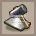
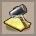
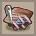
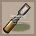
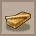
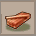
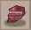
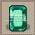
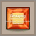

ในการซ่อมแซมไอเท็มนั้นเมื่อใช้ที่ซ่อม 1 ครั้ง ความทนทานสูงสุดของไอเท็มที่ซ่อมจะลดลง 1
เมื่อไอเท็มนั้นมีค่าความทนทาน 1 ก็จะซ่อมไอเท็มนั้นไม่ได้อีก
How to Make It
ชุดซ่อมแซมนั้นสามารถสร้างขึ้นได้ด้วยสกิล Repair Kit ของอาชีพสาย Back Packer
โดยระดับความทนทานที่สามารถฟื้นฟูได้นั้นจะสุ่ม โดยมีค่าตั้งแต่ 1-20
อาชีพที่มีสกิลสำหรับทำที่ซ่อมต่างๆ มีดังนี้
Tatarabe = Metalware Kit(Alloy Repair Kit)[Job Level 30]
Farmer = Wood Kit(Wiiden Repair Kit)[Job Level 30] / Sewing Kit(Cloth Repair Kit)[Job Level 40]
Ranger = Leather Kit(Coat Repair Kit)[Job Level 35]
Machinery = Machine Kit(Machine Repair Kit)[Job Level 3]
Type
โดยชุดซ่อมนั้นยังแบ่งประเภทอีกว่าซ่อมด้วยที่ซ่ิอม Copper Silver หรือ Golden
ทั้งนี้แบ่งตามเลเวลของไอเท็มนั้นๆดังนี้
Item Level 1 - 29 จะเป็น Copper
Item Level 30 - 59 จะเป็น Silver
Item Level 60 ขึ้นไปจะเป็น Golden
สร้างชุดซ่อมแซมอย่างมีประสิทธิภาพ
ที่ซ่อมที่สร้างขึ้นนั้น สามารถสร้างขึ้นให้มีประสิทธิภาพได้ โดยขึ้นอยู่กับสกิลที่สนับสนุนการผลิตชุดซ่อมแซม มีดังนี้
Tatarabe = Highly Refine(Alloy Repair Kit)[Job Level 13]
Farmer = Wood Create(Wooden Repair Kit)[Job Level 15] / Sewing Create(Cloth Repair Kit)[Job Level 25]
Ranger = Animal Knowledge(Coat Repair Kit)[Job Level 18]
Machinery = Machine Create(Machine Repair Kit)[Job Level 12]
ปริมาณการฟื้นฟูของชุดซ่อมแซม
ยื่งเราเรียนรู้สกิลทำชุดซ่อมแซมสูงเท่าไร เราก็จะสามารถสร้างชุดซ่อมแซมได้อย่างมีประสิทธิภาพยิ่งขึ้นเหมือนกัน โดยแต่ละเลเวลจะถูกกำหนดไว้ดังนี้
Skill Level 1 = ฟื้นฟูความทนทาน 1-8
Skill Level 2 = ฟื้นฟูความทนทาน 2-11
Skill Level 3 = ฟื้นฟูความทนทาน 3-14
Skill Level 4 = ฟื้นฟูความทนทาน 4-17
Skill Level 5 = ฟื้นฟูความทนทาน 5-20
*Golem ไม่สามารถซ่อมแซมได้นะ!
*--------------------------------------------------------------------------------------------------*
Alloy Repair Kit(Copper)
วิธีทำ
Copper Hammer x1
 Fabric Piece x 1
Fabric Piece x 1

Alloy Repair Kit(Silver)วิธีทำ
Silver Hammer x 1
 Steel Nugget x 2
Steel Nugget x 2

Alloy Repair Kit(Golden)วิธีทำ
Golden Hammer x 1
Fabric Piece x 2
Steel Nugget x 2
 Steel Bar x 2
Steel Bar x 2
._____________________________.

Cloth Repair Kit(Copper)วิธีทำ
Copper Needle x 1
Fabric x 1
 Cloth Repair Kit(Silver)
Cloth Repair Kit(Silver)
วิธีทำ
Silver Needle x 1
Great Cloth x 2
Cloth Repair Kit(Golden)
วิธีทำ
Golden Needle x 1
Fabric x 2
Great Cloth x 2
Greater Cloth x 2
._____________________________.
Wooden Repair Kit(Copper)
วิธีทำ

Copper Chisel x 1
Wood x 1 Wooden Repair Kit(Silver)
Wooden Repair Kit(Silver)
วิธีทำ
Silver Chisel x 1

Strong Wood x 2 Wooden Repair Kit(Golden)
Wooden Repair Kit(Golden)
วิธีทำ
Golden Chisel x 1
 Piece of Tree x 2
Piece of Tree x 2
Wood x 2
Strong Wood x 2
._____________________________.
 Coat Repair Kit(Copper)
Coat Repair Kit(Copper)
วิธีทำ
 Copper Scissor x 1
Copper Scissor x 1
Bau Skin Piece x 1
Coat Repair Kit(Silver)
วิธีทำ
Silver Scissor x 1
 Skin x 2
Skin x 2
Coat Repair Kit(Golden)
วิธีทำ
Golden Scissor x 1
Skin x 2

Crafted Skin x 2 Endure Skin x 2
Endure Skin x 2
._____________________________.
 Machine Repair Kit(Copper)
Machine Repair Kit(Copper)
วิธีทำ
Copper Driver x 1
 Part of Buriki x 1
Part of Buriki x 1
Machine Repair Kit(Silver)
วิธีทำ
Silver Driver x 1
Steel Part x 3
 Machine Repair Kit(Golden)
Machine Repair Kit(Golden)
วิธีทำ
Golden Driver x 1
Part of Buriki x 1
Steel Part x 1
Silver Part x 1
._____________________________.
Accessory Repair Kit(Copper)
วิธีทำ
แบบที่ 1
 Copper Tong x 1
Copper Tong x 1
 Copper Lump x 1
Copper Lump x 1
 Crystal Piece x 10
Crystal Piece x 10
แบบที่ 2
Copper Tong x 1
Copper Lump x 1
Piece of Rapiz Razuri x 10
 Accessory Repair Kit(Silver)
Accessory Repair Kit(Silver)
วิธีทำ
แบบที่ 1
Silver Tong x 1
 Silver Nugget x 1
Silver Nugget x 1

Emerald x 1แบบที่ 2
Silver Tong x 1
Silver Nugget x 1
Heart Ruby x 1
แบบที่ 3
Silver Tong x 1
Silver Nugget x 1
Aquamarine x 1
แบบที่ 4
Silver Tong x 1
Silver Nugget x 1

Imperial Topaz x 1Accessory Repair Kit(Golden)
วิธีทำ
แบบที่ 1
Golden Tong x 1
Gold Nugget x 1
Emerald x 1
แบบที่ 2
Golden Tong x 1
Gold Nugget x 1
Heart Ruby x 1
แบบที่ 3
Golden Tong x 1
Gold Nugget x 1
Aquamarine x 1
แบบที่ 4
Golden Tong x 1
Gold Nugget x 1
Imperial Topaz x 1
._____________________________.